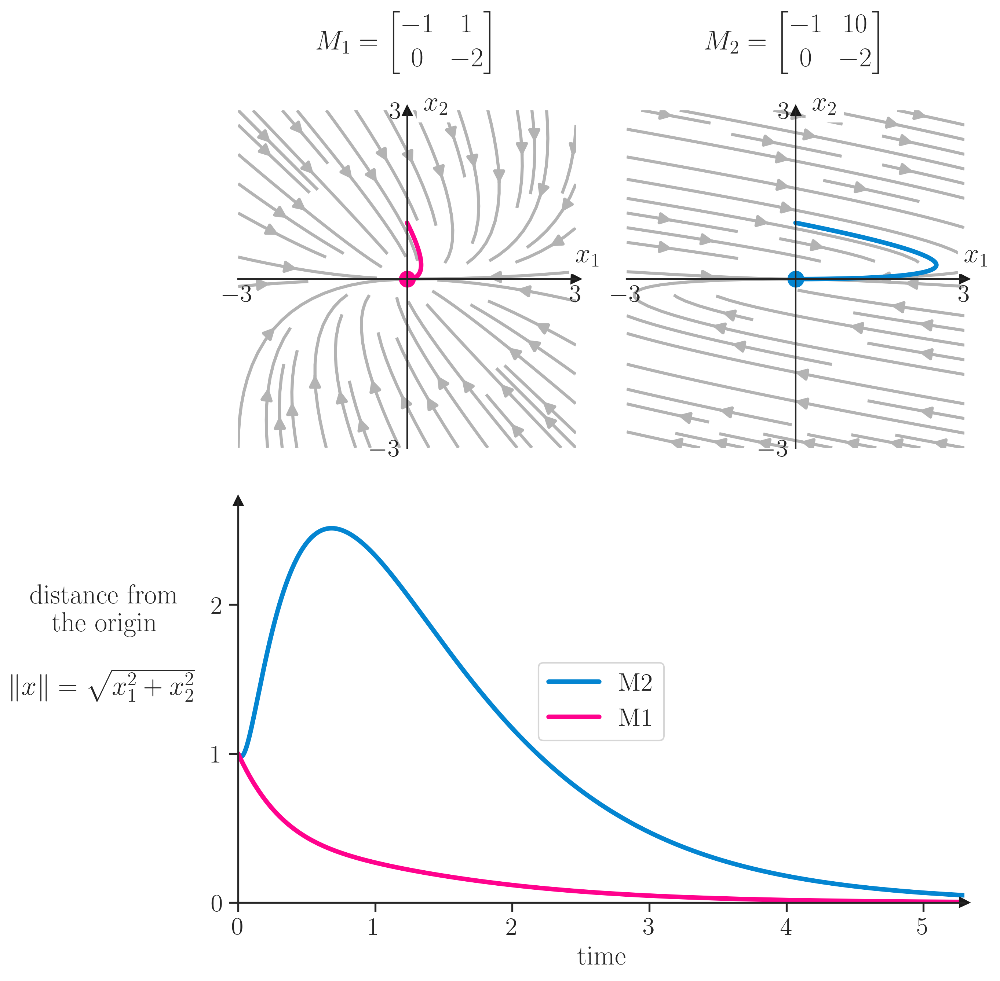

import numpy as npimport pandas as pdimport matplotlib.pyplot as pltimport matplotlibimport matplotlib.gridspec as gridspecfrom scipy.integrate import solve_ivpimport seaborn as snssns.set_theme(style="ticks", font_scale=1.5) # white graphs, with large and legible letters# %matplotlib widget
\[
\frac{d\mathbf{x}}{dt} = M \mathbf{x},
\] where \(\mathbf{x}=(x_1,x_2)\) and \(M = \begin{pmatrix} a & b \\ c & d \end{pmatrix}\).
system of equations
def system_equations_2d(p, x, y):return [p['a'] * x + p['b'] * y, p['c'] * x + p['d'] * y, ]# parameters as a dictionaryA0 = {'a': -1.0, 'b': +0.0,'c': +0.0, 'd': -2.0}A1 = {'a': -1.0, 'b': +1.0,'c': +0.0, 'd': -2.0}A2 = {'a': -1.0, 'b': +10,'c': +0.0, 'd': -2.0}
prepare streamplot and trajectories
min_x, max_x = [-3, 3]min_y, max_y = [-3, 3]div =50X, Y = np.meshgrid(np.linspace(min_x, max_x, div), np.linspace(min_y, max_y, div))# given initial conditions (x0,y0), simulate the trajectory of the system as ivpdef simulate_trajectory(p, x0, y0, tmax=10, dt=0.01): t_eval = np.arange(0, tmax, dt) sol = solve_ivp(lambda t, y: system_equations_2d(p, y[0], y[1]), [0, tmax], [x0, y0], t_eval=t_eval)return solt0 = simulate_trajectory(A0, 0, 1, 100)t1 = simulate_trajectory(A1, 0, 1, 100)t2 = simulate_trajectory(A2, 0, 1, 100)
now let’s plot
fig, ax = plt.subplots()density =2* [0.80]minlength =0.2arrow_color =3* [0.7]bright_color1 ="xkcd:hot pink"bright_color2 ="xkcd:cerulean"# make sure that each axes is squareax.set_aspect('equal', 'box')ax.streamplot(X, Y, system_equations_2d(A0, X, Y)[0], system_equations_2d(A0, X, Y)[1], density=density, color=arrow_color, arrowsize=1.5, linewidth=2, minlength=minlength, zorder=-10 )ax.plot(t0.y[0], t0.y[1], color=bright_color1, lw=3)# make spines at the origin, put arrow at the end of the axisax_list = [ax]for axx in ax_list: axx.spines['left'].set_position('zero') axx.spines['bottom'].set_position('zero') axx.spines['right'].set_color('none') axx.spines['top'].set_color('none') axx.spines['left'].set_linewidth(1.0) axx.spines['bottom'].set_linewidth(1.0) axx.xaxis.set_ticks_position('bottom') axx.yaxis.set_ticks_position('left') axx.xaxis.set_tick_params(width=0.5) axx.yaxis.set_tick_params(width=0.5)# put arrow at the end of the axis axx.plot(1, 0, ">k", transform=axx.get_yaxis_transform(), clip_on=False) axx.plot(0, 1, "^k", transform=axx.get_xaxis_transform(), clip_on=False) axx.text(1, 0.55, r"$x_1$", transform=axx.transAxes, clip_on=False, bbox=dict(facecolor='white', edgecolor='white')) axx.text(0.55, 1, r"$x_2$", transform=axx.transAxes, clip_on=False, bbox=dict(facecolor='white', edgecolor='white'))# set limits axx.set(xticks=[-3,3], yticks=[-3,3], xlim=[-3, 3], ylim=[-3, 3],)# remove ticks from both axes axx.tick_params(axis='both', which='both', length=0)# put on title the respective parameters as matrix, use latex equation# add pad to title to avoid overlap with x-axisax.set_title(r'$M_1=\begin{bmatrix} -1 & 0 \\ 0 & -2 \end{bmatrix}$', pad=40)
# learn how to configure:# http://matplotlib.sourceforge.net/users/customizing.htmlparams = {'font.family': 'serif','ps.usedistiller': 'xpdf','text.usetex': True,# include here any neede package for latex'text.latex.preamble': r'\usepackage{amsmath}', }plt.rcParams.update(params)# matplotlib.rcParams['text.latex.preamble'] = [# r'\usepackage{amsmath}',# r'\usepackage{mathtools}']fig = plt.figure(figsize=(10, 10))gs = gridspec.GridSpec(2, 2, width_ratios=[1,1], height_ratios=[1,1])gs.update(left=0.20, right=0.86,top=0.88, bottom=0.13, hspace=0.05, wspace=0.15)ax0 = plt.subplot(gs[0, 0])ax1 = plt.subplot(gs[0, 1])ax2 = plt.subplot(gs[1, :])density =2* [0.80]minlength =0.2arrow_color =3* [0.7]bright_color1 ="xkcd:hot pink"bright_color2 ="xkcd:cerulean"# make sure that each axes is squareax0.set_aspect('equal', 'box')ax1.set_aspect('equal', 'box')ax0.streamplot(X, Y, system_equations_2d(A1, X, Y)[0], system_equations_2d(A1, X, Y)[1], density=density, color=arrow_color, arrowsize=1.5, linewidth=2, minlength=minlength, zorder=-10 )ax1.streamplot(X, Y, system_equations_2d(A2, X, Y)[0], system_equations_2d(A2, X, Y)[1], density=density, color=arrow_color, arrowsize=1.5, linewidth=2, minlength=minlength, zorder=-10 )ax0.plot(t1.y[0], t1.y[1], color=bright_color1, lw=3)ax1.plot(t2.y[0], t2.y[1], color=bright_color2, lw=3)ax0.plot(t1.y[0][-1], t1.y[1][-1], 'o', color=bright_color1, markersize=10)ax1.plot(t2.y[0][-1], t2.y[1][-1], 'o', color=bright_color2, markersize=10)# make spines at the origin, put arrow at the end of the axisax_list = [ax0, ax1]for axx in ax_list: axx.spines['left'].set_position('zero') axx.spines['bottom'].set_position('zero') axx.spines['right'].set_color('none') axx.spines['top'].set_color('none') axx.spines['left'].set_linewidth(1.0) axx.spines['bottom'].set_linewidth(1.0) axx.xaxis.set_ticks_position('bottom') axx.yaxis.set_ticks_position('left') axx.xaxis.set_tick_params(width=0.5) axx.yaxis.set_tick_params(width=0.5)# put arrow at the end of the axis axx.plot(1, 0, ">k", transform=axx.get_yaxis_transform(), clip_on=False) axx.plot(0, 1, "^k", transform=axx.get_xaxis_transform(), clip_on=False) axx.text(1, 0.55, r"$x_1$", transform=axx.transAxes, clip_on=False, bbox=dict(facecolor='white', edgecolor='white')) axx.text(0.55, 1, r"$x_2$", transform=axx.transAxes, clip_on=False, bbox=dict(facecolor='white', edgecolor='white'))# set limits axx.set(xticks=[-3,3], yticks=[-3,3], xlim=[-3, 3], ylim=[-3, 3],)# remove ticks from both axes axx.tick_params(axis='both', which='both', length=0)# put on title the respective parameters as matrix, use latex equation# add pad to title to avoid overlap with x-axisax0.set_title(r'$M_1=\begin{bmatrix} -1 & 1 \\ 0 & -2 \end{bmatrix}$', pad=40)ax1.set_title(r'$M_2=\begin{bmatrix} -1 & 10 \\ 0 & -2 \end{bmatrix}$', pad=40)L2_one = np.sqrt(t1.y[0]**2+ t1.y[1]**2)L2_two = np.sqrt(t2.y[0]**2+ t2.y[1]**2)# bottom plotax2.plot(t1.t, L2_one, color=bright_color1, lw=3, label='M1')ax2.plot(t2.t, L2_two, color=bright_color2, lw=3, label='M2')ax2.legend(loc='center')ax2.set(xlim=[0,5.3], ylim=[0,2.7], yticks=[0,1,2], xlabel='time',)ax2.set_ylabel('distance from\nthe origin\n\n'+r"$\lVert x\rVert =\sqrt{x_1^2+x_2^2}$", labelpad=70, rotation=0)# only left and bottom spinesax2.spines['right'].set_color('none')ax2.spines['top'].set_color('none')ax2.plot(1, 0, ">k", transform=ax2.get_yaxis_transform(), clip_on=False)ax2.plot(0, 1, "^k", transform=ax2.get_xaxis_transform(), clip_on=False)

The question arises whether asymptotic behavior adequately characterizes the response to perturbations. Because of the short duration of many ecological experiments, transients may dominate the observed responses to perturbations. In addition, transient responses may be at least as important as asymptotic responses. Managers charged with ecosystem restoration, for example, are likely to be interested in both the short-term and long-term effects of their manipulations, particularly if the short-term effects can be large.